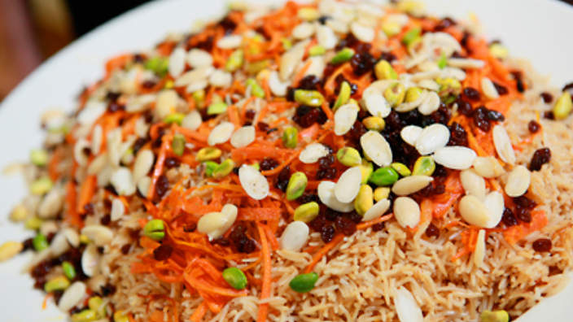

Barbecue
this is a typical Afghan kebab made from meat that is marinated for a specified period, and then barbecued or roasted in an open fire on skewers. It is traditionally made from sheep meat. However, variations of chicken and other meats are also available.
Qabuli Palaw
Kabuli Pulao’ or ‘Qabli Palaw’ is a generic name for a variety of pulao (pulav) menus from Afghanistan, all of which are prepared using the same cooking method. This dish originated in the northern part of the country and is one of the most popular dishes in the country.

Fresh Vegetables
Afghanistan has so much Fresh Vegetables.